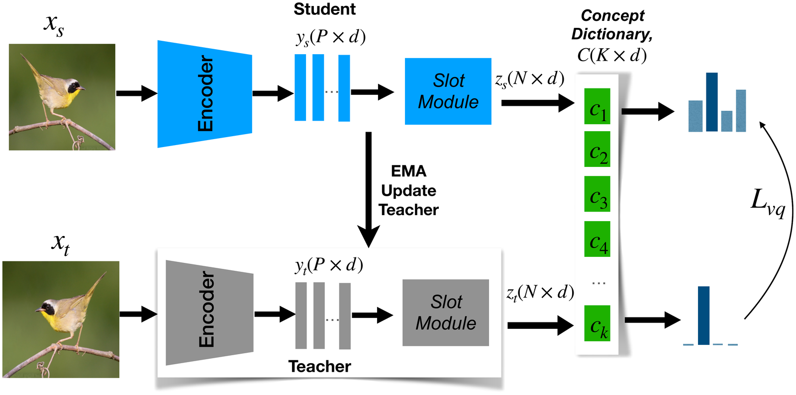
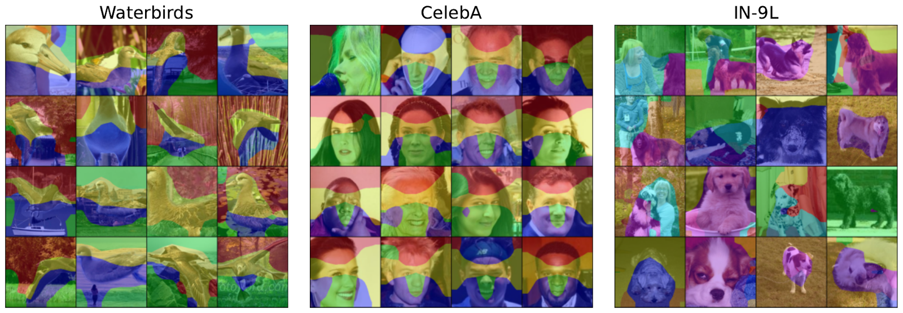
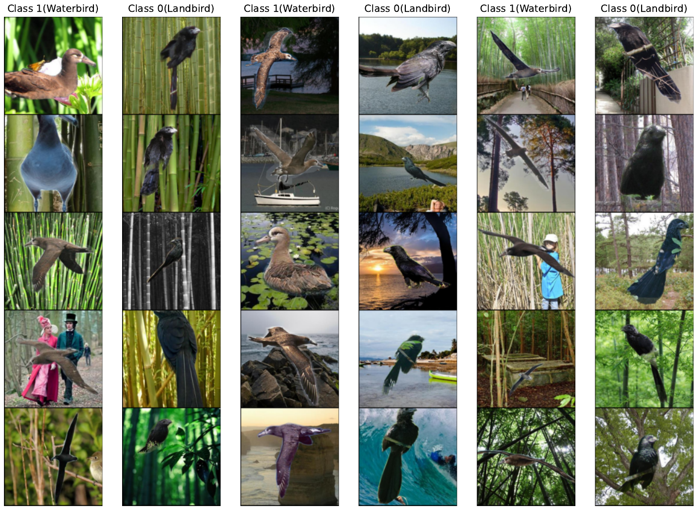
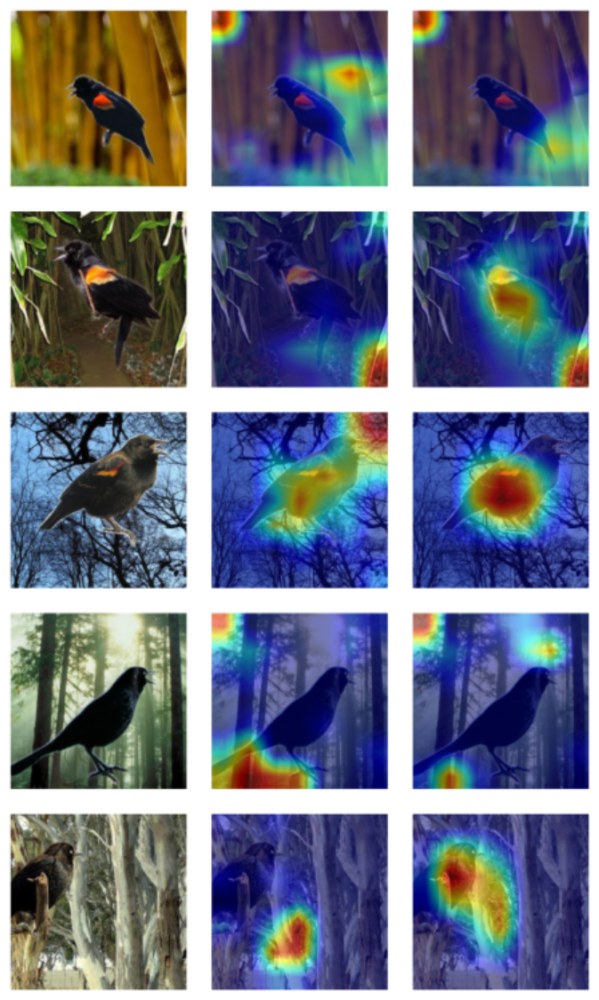

Unsupervised Concept Discovery Mitigates Spurious Correlations
Object-centric representation learning discovers data-driven concepts that stand in for subgroup labels — letting a classifier balance away spurious correlations without any group annotation
Models that latch onto spurious correlations make brittle, biased predictions, and the usual fixes need human group annotations that are expensive or ill-defined. This paper draws a new connection between unsupervised object-centric learning and robustness: instead of inferring subgroups, it discovers concepts — discrete ideas shared across images — using slot attention plus vector quantization. The resulting method, CoBalT (Concept Balancing Technique), re-samples training data to balance these learned concepts, and matches or beats state-of-the-art group-robustness baselines on Waterbirds, CelebA, CMNIST, UrbanCars and ImageNet-9 — without any subgroup labels.
The problem with spurious correlations
Deep classifiers tend to predict from whatever correlates with the label in the training data, not from robustly informative features (Arjovsky et al. 2019; Sagawa et al. 2020). Changing an image’s background can flip a prediction — a symptom of the simplicity bias of neural networks (Shah et al. 2020; Geirhos et al. 2020). Such models can look strong on i.i.d. test data while failing on the subgroups where the correlation breaks.
The standard remedies partition the data by a known spurious attribute and then equalise training across those groups (Sagawa et al. 2020; Kirichenko et al. 2023). But most real datasets carry no such annotations, and manual grouping is expensive and often ill-defined — the right partition is not obvious, and a dataset can hide several spurious cues at once. This paper asks whether the groups can be replaced by something a model discovers on its own.
From subgroups to concepts
The central move is to stop trying to recover subgroups directly and instead discover concepts: discrete ideas that recur across images — blue bird, street background, short beak — that need not line up with the dataset’s official subgroups. The authors build on object-centric self-supervised learning — specifically the semantic-grouping approach of Wen et al. (2022), which uses slot attention (Locatello et al. 2020) to decompose a scene into its constituent parts — and argue that this decomposition can serve as a data-driven proxy for subgroup labels.
The method, CoBalT (Concept Balancing Technique), follows the two-stage recipe common in this literature: first infer something about the training data, then use it for robust training.
Stage 1 — discovering a concept dictionary
A two-branch student/teacher network (asymmetric weights, teacher updated by an exponential moving average of the student) encodes two augmented views of an image and groups patches into slot representations z_s, z_t \in \mathbb{R}^{N\times d}, where N is the number of slots and d their dimension. Each slot is a semantic grouping of a region — ideally a single object.

On top of the slots, CoBalT learns a concept dictionary C\in\mathbb{R}^{K\times d}: a codebook of K vectors, each a symbolic concept, learned by vector quantization (Oord et al. 2017). Slots are softly assigned to dictionary entries on the student branch and hard-assigned (via \arg\max) on the teacher branch,
(p_s)_{ij} = \frac{\exp\!\big(-\lVert C_i - (\bar{z}_s)_j\rVert_2^2/\tau_s\big)} {\sum_{t=1}^{K}\exp\!\big(-\lVert C_t - (\bar{z}_s)_j\rVert_2^2/\tau_s\big)}, \qquad (p_t)_i = \arg\max_j \; -\lVert C_j - (\bar{z}_t)_i\rVert_2^2,
with slots L2-normalised and \tau_s a temperature. The dictionary is updated as an exponential moving average of the teacher’s assigned slot representations (codebook update rate \alpha_c = 0.9 in all experiments). A novel cross-entropy term \mathcal{L}_{vq} distills the teacher’s discrete concept assignment onto the student, and is added to the attention-distillation and contrastive losses inherited from Wen et al. (2022):
\mathcal{L} = \mathcal{L}_{dis} + \mathcal{L}_{con} + \mathcal{L}_{vq}.
The output of Stage 1 is an association of every training image with a set of discrete concepts, and hence concept-occurrence statistics across the dataset.
Stage 2 — balancing concepts
With the concepts frozen, a separate classifier is trained — its architecture is “inconsequential”; the contribution is the sampling. Inspired by the observation that, when ground-truth subgroups are known, simply balancing the subgroup sampling rate is the most effective fix (Sagawa et al. 2020; Yang et al. 2024), CoBalT balances learned concepts instead: prevalent concepts are sampled less often, rare ones more often, and within each concept the classes are balanced where possible. Inside a cluster c with class counts |T_{c,y}|, the sampling weight and probability are
w_{c,y} = \frac{1}{|T_{c,y}|}, \qquad p_{c,y} = \frac{w_{c,y}^{\lambda}}{\sum_{\hat{y}} w_{c,\hat{y}}^{\lambda}},
where \lambda is a sampling factor (default 1, increased when concept clusters are poorly separated, guided by the silhouette score). A subtlety the paper is careful about: each image belongs to several concepts rather than one subgroup, and a concept can appear across classes at different frequencies.
Because group annotations are also typically needed for model selection, the paper reports three early-stopping variants: CoBalT_{hg} (human-annotated worst group), CoBalT_{ig} (worst group inferred from the discovered concepts), and CoBalT_{avg} (plain average validation accuracy). The latter two use no human group labels at all.
What the concepts look like
The slot decomposition recovers interpretable regions: in Waterbirds, parts of the bird’s body and backgrounds such as trees and water; in ImageNet-9, humans, animals and grass; in CelebA, the nose, eyes and hair.

Quantizing the slots into the concept dictionary then clusters images by shared concepts — even across classes. Selecting two of the discovered Waterbirds concepts, one reads as a trees/bamboo background and the other as a water background, each pulling together waterbirds and landbirds that happen to share that backdrop.

Results
CoBalT is evaluated on CMNIST, Waterbirds, CelebA, UrbanCars and the ImageNet-9 background challenge (IN-9L), against group-robustness methods that span the full annotation spectrum — from those needing group labels at train and validation time, to fully group-agnostic ones.
| Method | Group label (Tr/Val) | CMNIST WG | CMNIST Avg | Waterbirds WG | Waterbirds Avg | CelebA WG | CelebA Avg |
|---|---|---|---|---|---|---|---|
| GB | ✓ / ✓ | 82.2±1.0 | 91.7±0.6 | 86.3±0.3 | 93.0±1.5 | 85.0±1.1 | 92.7±0.1 |
| GDRO (Sagawa et al. 2020) | ✓ / ✓ | 78.5±4.5 | 90.6±0.1 | 89.9±0.6 | 92.0±0.6 | 88.9±1.3 | 93.9±0.1 |
| DFR^{\text{Val}} (Kirichenko et al. 2023) | ✓ / ✓ | – | – | 91.8±2.6 | 93.5±1.4 | 87.3±1.0 | 90.2±0.8 |
| SPARE (Yang et al. 2024) | ✗ / ✓ | 83.0±1.7 | 91.8±0.7 | 89.8±0.6 | 94.2±1.6 | 90.3±0.3 | 91.1±0.1 |
| AFR (Qiu et al. 2023) | ✗ / ✓ | – | – | 90.4±1.1 | 94.2±1.2 | 82.0±0.5 | 91.3±0.3 |
| CoBalT_{hg} (ours) | ✗ / ✓ | 79.0±4.3 | 96.6±1.8 | 90.6±0.7 | 93.7±0.6 | 88.0±2.5 | 92.3±0.7 |
| ERM | ✗ / ✗ | 0.0±0.0 | 20.1±0.2 | 62.6±0.3 | 97.3±1.0 | 47.7±2.1 | 94.9±0.3 |
| MaskTune (Asgari et al. 2022) | ✗ / ✗ | – | – | 86.4±1.9 | 93.0±0.7 | 78.0±1.2 | 91.3±0.1 |
| ULA (Tsirigotis et al. 2023) | ✗ / ✗ | 75.1±0.8 | – | 86.1±1.5 | 91.5±0.7 | 86.5±3.7 | 93.9±0.2 |
| XRM (Pezeshki et al. 2023) | ✗ / ✗ | 70.5 | – | 86.1 | 90.6 | 89.8 | 91.8 |
| CoBalT_{ig} (ours) | ✗ / ✗ | 73.5±2.1 | 96.0±1.6 | 89.0±1.6 | 92.5±1.7 | 89.2±1.2 | 92.3±0.6 |
| CoBalT_{avg} (ours) | ✗ / ✗ | 74.5±2.0 | 96.2±2.0 | 90.6±0.7 | 93.8±0.8 | 81.1±2.7 | 92.8±0.9 |
Among the fully group-agnostic methods (bottom block), CoBalT_{ig} outperforms the recent ULA and XRM on Waterbirds worst-group accuracy by nearly 3% (89.0±1.6 vs 86.1 for both), while staying competitive on CelebA and CMNIST. The variants that do not infer groups still hold up: CoBalT_{avg} reaches 90.6±0.7 worst-group on Waterbirds.
Two spurious correlations at once. UrbanCars deliberately injects two cues per class — a background and a co-occurring object — where prior methods exhibit “whack-a-mole” behaviour, fixing one cue while amplifying the other (Li et al. 2023). Here CoBalT_{ig} reaches 80.0±2.8 worst-group accuracy, about 3% over SPARE (76.9±1.8), the strongest group-agnostic baseline, while ERM, LfF and JTT collapse on the worst group.
| Method | Worst Group | Average |
|---|---|---|
| ERM | 28.4 | 97.6 |
| JTT | 55.8 | 95.9 |
| GDRO | 75.2 | 91.6 |
| SPARE | 76.9±1.8 | 96.6±0.5 |
| CoBalT_{ig} (ours) | 80.0±2.8 | 96.3±0.6 |
| CoBalT_{avg} (ours) | 76.8±6.5 | 97.3±0.7 |
Attribute generalization (ImageNet-9). Trained only on the original IN-9L training set, CoBalT is tested under background swaps. CoBalT_{ig} improves over MaskTune by 1.5% on Mixed-rand (80.1 vs 78.6) and 1.9% on Only-FG (90.0 vs 88.1), with parity on the unmodified set.1
1 The paper’s prose also reports a 1.1% gain on Mixed-same, but its own table lists CoBalT_{ig} at 91.2 vs MaskTune at 91.1 there (a 0.1-point gap); we report the table values verbatim and flag the discrepancy rather than restate the prose figure.
| Method | Original | Mixed-same | Mixed-rand | Only-FG |
|---|---|---|---|---|
| ERM | 97.9 | 90.5 | 79.2 | 88.5 |
| CIM | 97.7 | 89.8 | 81.1 | – |
| MaskTune (Asgari et al. 2022) | 95.6 | 91.1 | 78.6 | 88.1 |
| CoBalT_{ig} (ours) | 97.9 | 91.2 | 80.1 | 90.0 |
| CoBalT_{avg} (ours) | 97.9 | 91.2 | 80.3 | 90.1 |
Robust without validation groups. When human-annotated validation groups are withheld for CelebA — forcing baselines to select models on average accuracy — most group-inference methods fall below ERM on the worst group. CoBalT infers its own validation groups: CoBalT_{ig} reaches 89.2±1.2 worst-group accuracy versus 78.0±1.2 for MaskTune and 47.7±2.1 for ERM.
The method also relies less on backgrounds than ERM, visible in GradCAM:

On the Biased Action Recognition (BAR) dataset, where actions are biased toward distinct places and concepts are clearly spatial, CoBalT_{ig} reaches 67.0±0.9 accuracy, above LfF (63.0±2.8), ReBias (59.7±1.5) and ERM (51.9±5.9).
Takeaways
CoBalT shows that the group annotations usually demanded by spurious-correlation methods can be replaced by concepts discovered without supervision: slot attention plus vector quantization yields a dictionary of recurring visual ideas that cut across class labels, and balancing those concepts during training produces classifiers competitive with, or better than, group-aware baselines — notably when a dataset hides multiple spurious cues, or when validation-time group labels are unavailable. The authors are explicit about the limits: the approach assumes concepts are spatially separable, so its advantage shrinks on datasets like CMNIST and CelebA where the spurious factor is not a distinct region, and the self-supervised concept learner must guard against representation collapse. Extending the idea beyond vision — to NLP and multimodal data — and factorizing each region into finer concepts are flagged as future work.
The figures on this page are reproduced from the original paper, which is released under CC BY 4.0. A copyable BibTeX entry for this page is generated below.
Citation
@inproceedings{rifat_arefin2024,
author = {Rifat Arefin, Md and Zhang, Yan and Baratin, Aristide and
Locatello, Francesco and Rish, Irina and Liu, Dianbo and Kawaguchi,
Kenji},
title = {Unsupervised {Concept} {Discovery} {Mitigates} {Spurious}
{Correlations}},
booktitle = {Proceedings of the 41st International Conference on
Machine Learning (ICML)},
date = {2024-07-16},
url = {https://arxiv.org/abs/2402.13368}
}